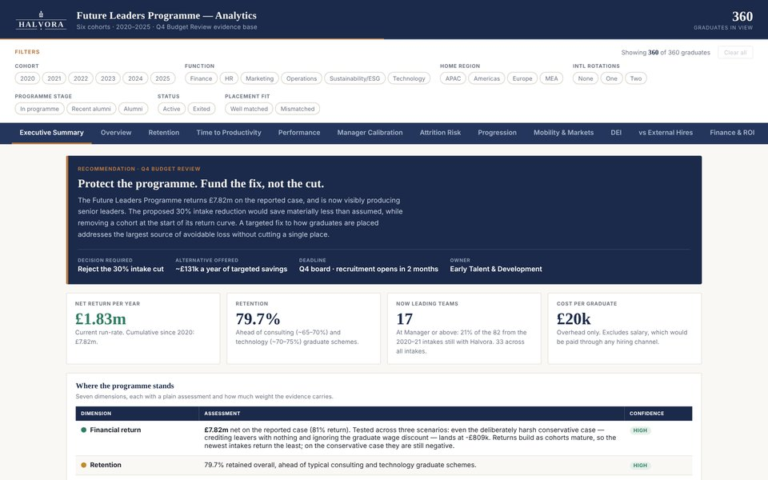
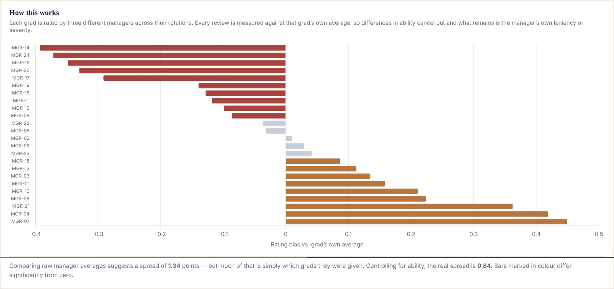

The problem
The Group CFO’s view was that graduate programmes are the easiest cut to make because their value is the hardest to prove. Finance assumed a 30% intake cut would save about £354k a year. The programme had never been measured, so nobody could answer back.
The CPO asked four questions. Is the programme building future leaders, or just rotating people? Is it worth the cost compared with hiring experienced people? Are we managing attrition? Are we meeting our diversity commitments ahead of new disclosure rules?
My approach
I mapped every chart to one of the CPO’s questions, so the dashboard answers what leadership actually asked rather than showing everything the data could show. It has twelve views, from an executive summary to retention, manager calibration, progression, mobility, DEI, build vs buy, and finance.
I broke the cost into its parts. The programme sat in the budget as one line. Built up from eight components, it costs about £19,700 per graduate, and around 23% of that is fixed. So a 30% cut saves roughly £281k, not £354k.
I compared the programme with the real alternative. Cutting places doesn’t remove the roles; they get filled by experienced hires instead. I compared graduates with 210 external hires modelled on published research (Bidwell, 2011), including the findings that work against the programme.

The judgement calls
A range, not a single number. The programme’s value depends on how much more a graduate delivers than the alternative hire, which can’t be measured directly. So I showed three scenarios. The harshest one is negative, and I put it first, because a sceptical CFO would build it anyway.
Testing findings before reporting them. With about 60 graduates per cohort, a handful of leavers can look like a pattern. I re-ran each analysis across 40 simulated versions of the programme and reported how often it held. An early finding linking international rotations to retention looked significant once, held 0% of the time, and was withdrawn.
Reporting what doesn’t flatter the case. Graduates and external hires retain and get promoted at about the same rate, and external hires get up to speed faster. I said so. The case rests on cost and performance, not on claims that wouldn’t survive challenge.
Separating harsh reviewers from weak performers. Each graduate is rated by three managers. Comparing every rating with that graduate’s own average shows how much comes down to who did the reviewing.

What the evidence showed
- Buying the same work costs 25% more. Graduates cost about £47,100 per productive year against £58,800 for external hires, and the gap repeats every year they stay.
- The return builds over time. Each cohort’s return improves as it matures, with breakeven at around three years. Judging the programme on its newest intakes misreads it.
- Placement fit is the biggest lever. Graduates placed against their stated interest were retained at 68% against 82.5% for well-matched ones. This held in 98% of stability tests.
- Sustainability/ESG graduates leave more often, in the skill the company can least easily buy. This was real but less certain (it held in 68% of tests), so I recommended a review, not a big spend.
- No promotion gap by gender, ethnic background or first-generation status. I reported this as a null result, with the caveat that the sample can’t detect gaps below about 10 points.
The recommendation
Reject the 30% cut, and fix what the data shows is underperforming: formalise how graduates are matched to rotations, review the ESG track, and calibrate the managers with the largest rating bias. To avoid simply refusing to contribute to the savings target, I offered savings of my own from inefficiencies, such as making a second international rotation the exception rather than the default.
What I took from it
A people case gets heard when it’s built the way Finance builds one: on cost drivers, alternatives and ranges, with the weak spots stated before someone else finds them. My finance background did as much work here as the HR content.
Halvora, its people and all figures are simulated for portfolio purposes. I used generative AI (Claude) to help build the dataset and dashboard; the framing, analysis choices and recommendation are my own.